1. Yuk, Mulai dari Cerita Dulu!
- Kirim foto ke grup kelas, centang satu lamaaa banget.
- Lagi seru video call, eh tiba-tiba patah-patah.
- Masuk ke basement mal, sinyal HP langsung hilang.
- Dapat pesan “Kamu menang hadiah! Klik link ini!” dari nomor nggak dikenal.
Semua kejadian itu berhubungan dengan satu hal: bagaimana data berpindah dari satu perangkat ke perangkat lain. Hari ini kamu jadi “detektif data”. Kita cari tahu:
- Bagaimana data dikirim lewat jaringan dan internet?
- Kenapa kekuatan sinyal HP bisa berubah-ubah?
- Bagaimana caranya tetap aman saat online?
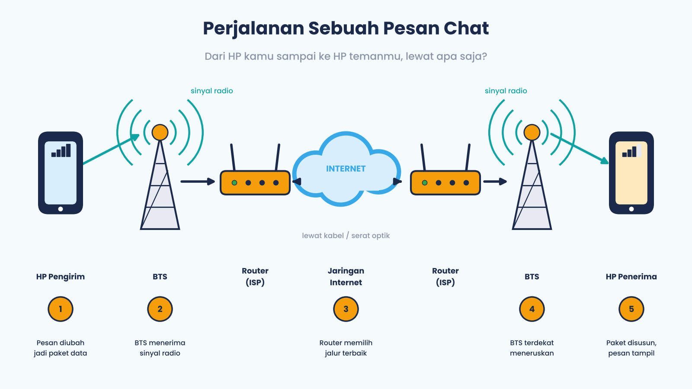
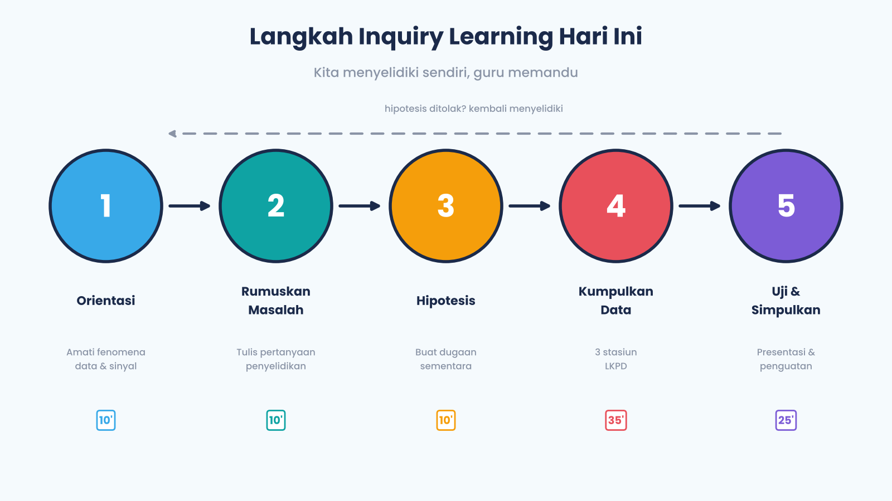
2. Analogi Gampang: Kirim Paket Pos
Bayangkan kamu kirim paket dari Tarakan ke teman di kota lain. Paketmu nggak langsung terbang ke rumahnya, kan? Dia singgah di kantor pos, dipilah di pusat sortir, dibawa kurir, baru sampai. Data internet juga begitu!
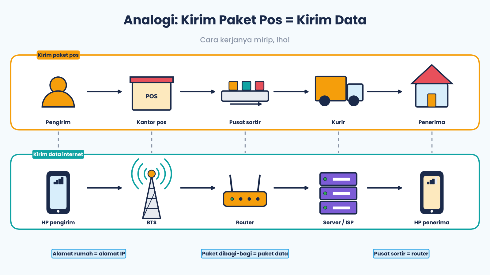
3. Jaringan Komputer
Jaringan komputer adalah dua atau lebih komputer yang terhubung untuk berbagi data. Tiap perangkat punya “nomor identitas” unik namanya alamat IP, mirip alamat rumah supaya data nggak nyasar.
3.1 Jaringan Lokal (LAN) dan Internet
| Jaringan lokal (LAN) | Internet | |
|---|---|---|
| Jangkauan | Kecil: rumah, sekolah, kantor | Luas banget: antar negara, seluruh dunia |
| Contoh | Jaringan lab komputer di sekolah | Jaringan yang menghubungkan HP dan server di mana-mana |
| Singkatnya | Jaringan satu area | Jaringan antar jaringan (inter-network) |
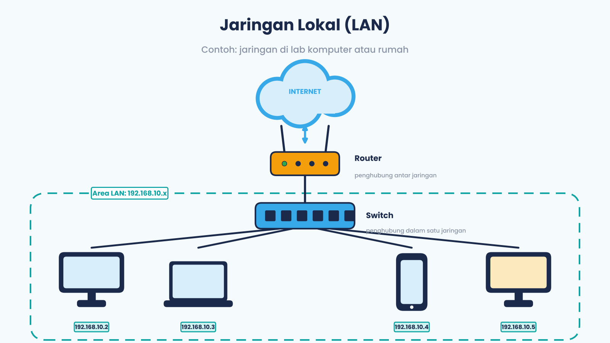
3.2 Switch vs Router
- Switch: menghubungkan perangkat di jaringan yang sama. Contoh: 192.168.10.1 dan 192.168.10.2.
- Router: menghubungkan dua jaringan yang berbeda. Contoh: 192.168.10.1 dengan 192.168.20.2.
- Protokol: aturan agar dua perangkat bisa “nyambung”. Internet memakai TCP/IP.
🧪 Coba Sendiri: Satu jaringan atau beda jaringan?
Perangkat A beralamat 192.168.10.7. Pilih alamat perangkat lain, lalu lihat butuh switch atau router!
3.3 Node dan Link
Biar gampang dipelajari, jaringan digambar sederhana: perangkat jadi titik (node), jalur penghubung jadi garis (link/edge). Switch jadi titik yang punya banyak garis.
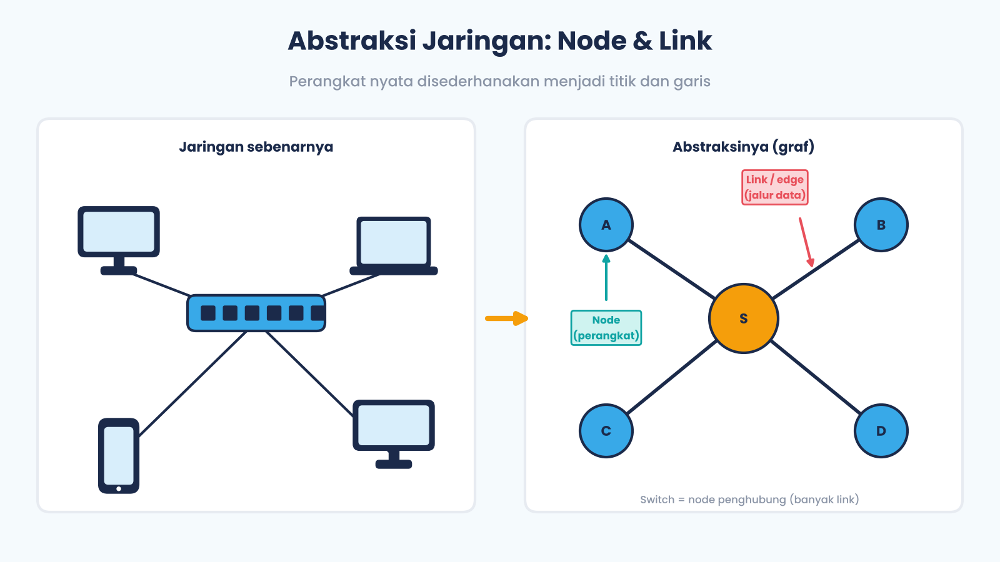
3.4 Routing: Memilih Jalan Terbaik
Routing adalah proses menentukan jalur data dari asal ke tujuan. Router seperti aplikasi peta: dia memilih jalur terpendek. Kalau ada jalur yang sama pendek, router memilih salah satunya secara acak.
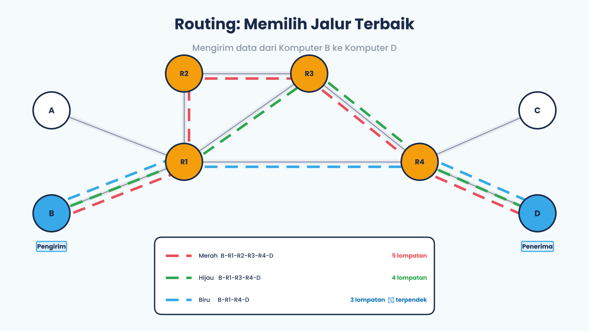
🧪 Coba Sendiri: Router pilih jalur yang mana?
Kirim data dari B ke D. Pilih jalur yang akan dipakai router:
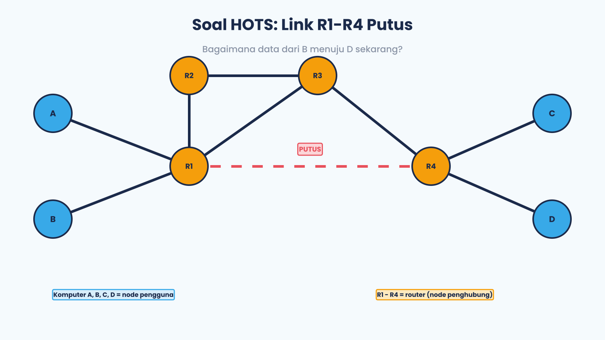
3.5 Data Dipecah Jadi Paket
Foto yang besar nggak dikirim utuh. Dia dipecah jadi paket-paket kecil. Tiap paket bawa: alamat asal, alamat tujuan, nomor urut, dan sepotong data. Paket boleh lewat jalur berbeda, lalu disusun ulang di tujuan sesuai nomor urut. Kalau ada paket hilang, cukup paket itu saja yang dikirim lagi.
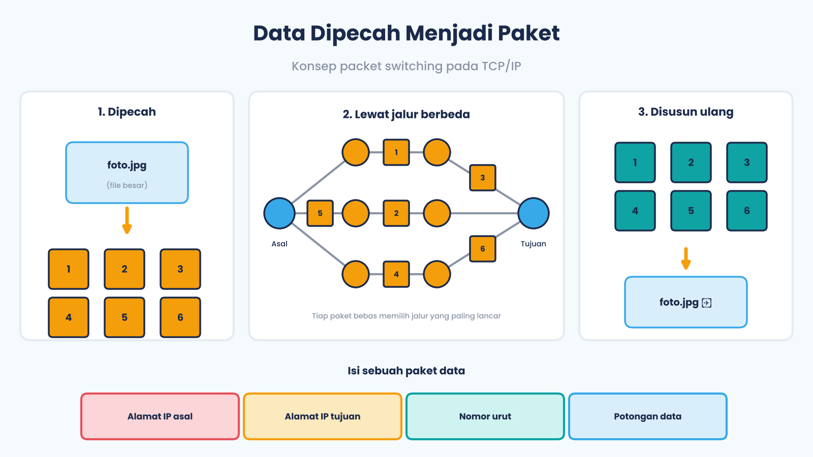
4. Data di Ponsel: Ada BTS di Tengah-tengahnya
Waktu kamu kirim pesan, telepon, atau buka internet lewat HP, HP-mu berkomunikasi dengan BTS (Base Transceiver Station), menara pemancar dan penerima sinyal. Di satu kota ada banyak BTS, dan HP-mu dilayani BTS terdekat. Kalau kamu bergerak, HP pindah BTS otomatis. Makanya disebut mobile phone!
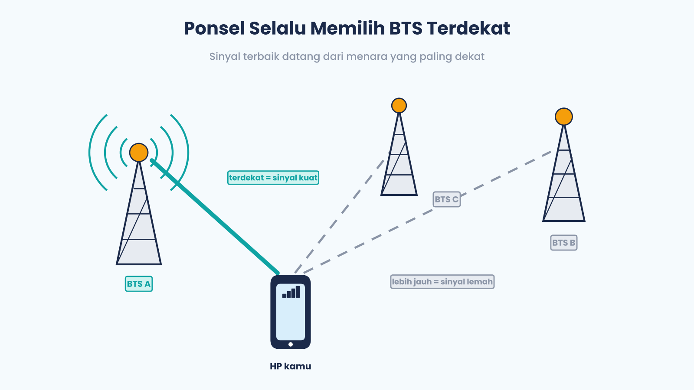
4.1 Kenapa Sinyal HP Berubah-ubah?
| Faktor | Penjelasan singkat |
|---|---|
| 1. Jarak dari BTS | Makin dekat, makin kuat. Makin jauh, makin lemah. |
| 2. Material bangunan | Beton dan baja menahan sinyal, makanya di basement sinyal hilang. |
| 3. Halangan | Tembok, besi, atau gedung di antara HP dan BTS melemahkan sinyal. |
| 4. Cuaca | Hujan dan kabut bisa mengganggu gelombang radio. |
| 5. Pengguna lain | Satu BTS punya batas koneksi. Kalau ramai, jadi lemot. |
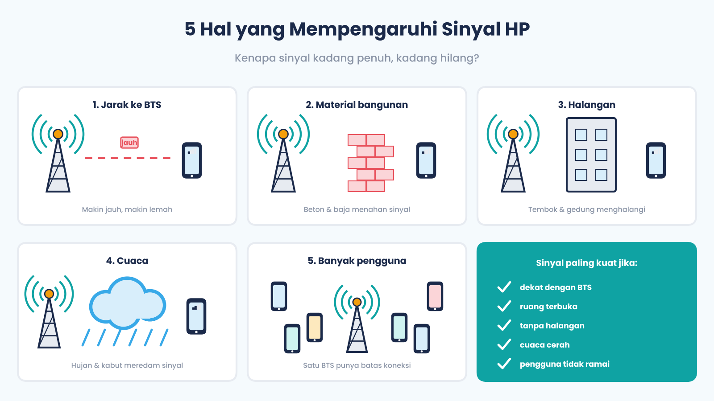
🧪 Coba Sendiri: Geser jarak HP ke BTS
Anggap ruang terbuka tanpa halangan. Jarak < 3 m = sinyal kuat (aturan di LKPD).
Jarak: 2.0 m
4.2 Baca Bar Sinyal di HP-mu
Di ruang terbuka, 1 bar berarti BTS terdekat jauh, 4 bar berarti dekat. Coba pindah-pindah tempat dan lihat bar-nya!
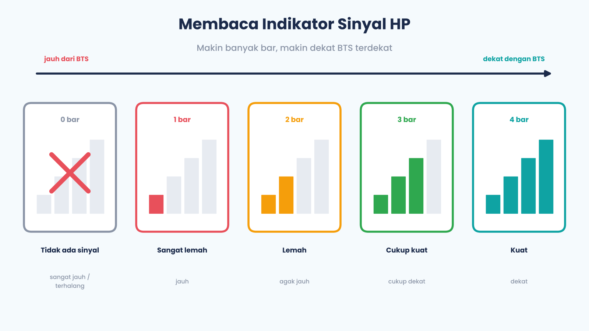
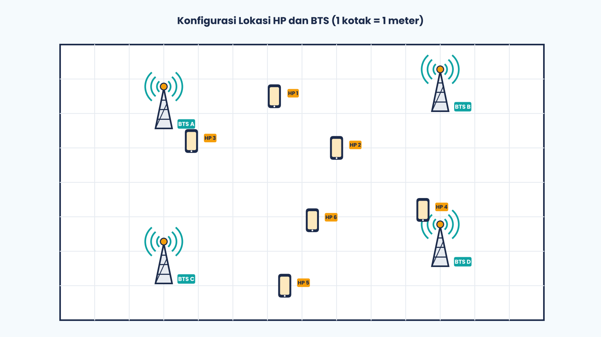
5. Online dengan Aman
Datamu berharga: password, nomor HP, foto. Kenali dulu bahayanya.
- Internet Positif: program pemerintah Indonesia yang memblokir website berbahaya (hoaks, SARA, pornografi, situs pencuri data).
- Phishing: penipuan dengan halaman palsu yang mirip aslinya supaya kamu mengisi username dan password. Data kamu dicuri!
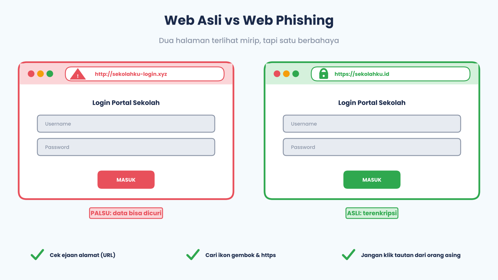
5.1 Cara Ngecek Website Aman
- Cek ejaan alamat (URL). Penipu membuat alamat yang mirip tapi beda satu huruf atau ditambah kata aneh.
- Cari ikon gembok dan https. Gembok artinya sambungan terenkripsi. Tapi gembok saja belum cukup. Tetap cek alamatnya!
- Jangan asal klik link dari orang tak dikenal, apalagi yang menjanjikan hadiah.
- Cek lewat Google Safe Browsing (transparencyreport.google.com/safe-browsing/search).
🧪 Coba Sendiri: Aman atau bahaya?
5.2 Atur Keamanan di Chrome
- Buka Chrome.
- Klik titik tiga di kanan atas, pilih Settings.
- Pilih Privacy and security.
- Atur setelan situs atau hapus data penjelajahan (riwayat, cookie, sandi tersimpan).
- Browser akan memberi peringatan kalau kamu membuka situs berbahaya.
Catatan: tampilan menu bisa berbeda tergantung versi browser.
6. Rangkuman Kilat
| Topik | Intinya |
|---|---|
| Jaringan | Perangkat terhubung dan punya alamat IP. LAN = area kecil, internet = jaringan antar jaringan. |
| Switch & router | Switch di dalam satu jaringan, router antar jaringan. |
| Routing | Router memilih jalur terpendek (lompatan paling sedikit). |
| Paket data | Data dipecah, dikirim lewat jalur berbeda, disusun ulang di tujuan. |
| BTS & sinyal | HP dilayani BTS terdekat. Sinyal dipengaruhi jarak, material, halangan, cuaca, dan jumlah pengguna. |
| Aman online | Cek URL, gembok/https, jangan klik link asing, waspada phishing. |
Istilah penting
| Alamat IP | Nomor identitas unik perangkat di jaringan |
| LAN | Jaringan lokal di area terbatas |
| Internet | Jaringan antar jaringan komputer yang luas |
| Switch | Penghubung perangkat dalam jaringan yang sama |
| Router | Penghubung dua jaringan berbeda dan penentu jalur |
| Node / Link | Titik (perangkat) / garis (jalur) pada gambar jaringan |
| Routing | Proses menentukan jalur data |
| Paket data | Potongan kecil data yang dikirim lewat jaringan |
| BTS | Menara pemancar dan penerima sinyal seluler |
| Phishing | Penipuan memakai halaman palsu untuk mencuri data |
7. Kuis Mini
Jawab tiap soal, nanti langsung ada pembahasannya.